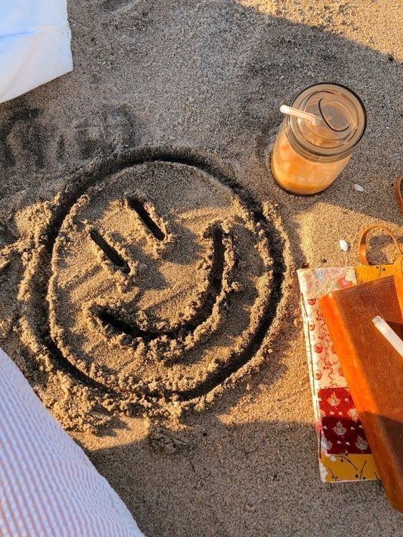
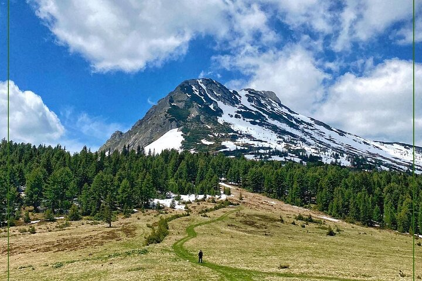
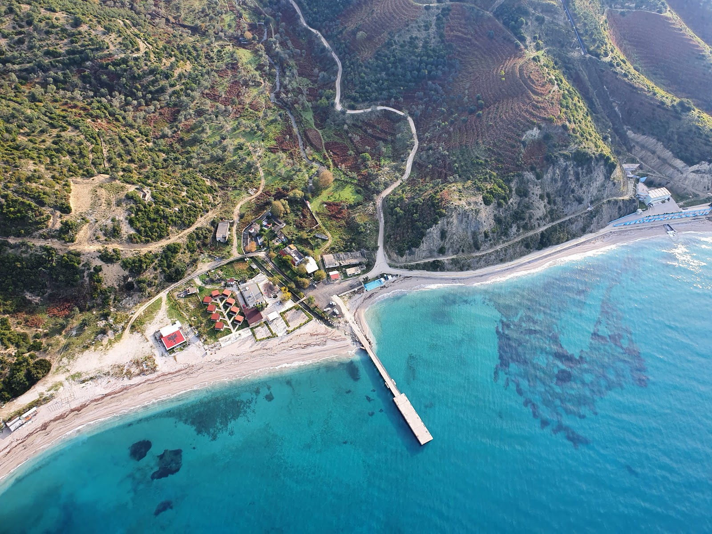
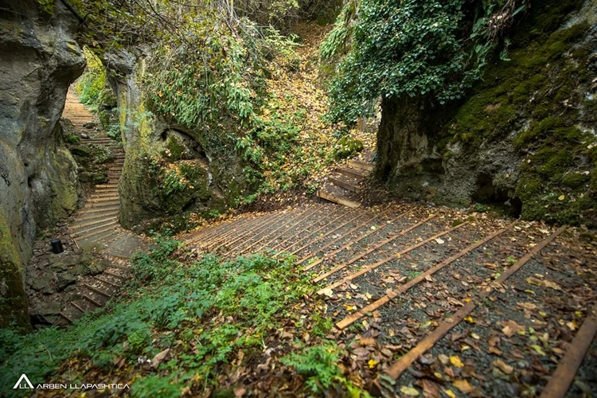

Summer Vibes
Where should I go?
People often wonder which places are THE places to visit during the summer.
This website is the BEST place you could land on, in terms of exploring
beautiful places to visit in Kosovo/Albania.
This ranges from beautiful beaches, to peak mountains, and
casual places to spend a day touring!

These are the top 3 places that made it to the list for 2023, next year
we'll update you to even more options you could possibly explore!
If you did visit one of these places after taking our suggestion, please give us
feedback about it. Did you agree and absolutely love it? Hope so!

The MUST visit places:

1. Hajla is a mountain located between the borders of Kosovo
and
Montenegro. It
has several
peaks
that
reach over 2,000 m, the highest having 2,403 m which is also called Hajla. The northern slopes
contains
the spring formation of the Ibar river, and to its southern slopes is the origin of the Bistrica
e
Pejës
river.

2. Buneci Beach (Plazhi i Bunecit) is everything but a party beach. There are a few
bars that
serve
food and rent beds, but since the beach is large, you can also escape to some quiet places.
There is
also a pier from which you can jump right into the water. Since the beach is located in a remote
area away from any town the surroundings are really beautiful.

3. The Marble Cave or the Gadime Cave is a karstic limestone cave in the village of
Gadime e
Ulët in
the municipality of Lipljan in Kosovo. Much of it is still unexplored. The cave was found in
1966 by
a villager, Ahmet Asllani, who was working on his garden.